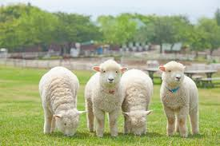
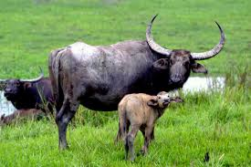

ヒツジ
ヒツジは、ウシ科ヤギ亜科の鯨偶蹄目である。角をもち、主に羊毛のために家畜化されている。
水牛
ウシ科の哺乳類アジアスイギュウを指す。頭胴長2.8メートル、肩高1.8メートルほど。体は暗灰色。角は大きく、三日月状。水辺にすみ、暑い日中は水に入っていることが多い。
チーター

チーター は、哺乳綱食肉目ネコ科チーター属に分類される食肉類。現生種では本種のみでチーター属を構成する。 古い和名は狩猟豹という。
ウマは、ウマ目のウマ科のノウマの亜種である。 社会性の強い動物で、野生のものも家畜も群れをなす傾向がある。
ジャッカルは、哺乳綱食肉目イヌ科イヌ属 Canis の、キンイロジャッカルに似た中小型種3-4種の総称である。
ライオン は、食肉目ネコ科ヒョウ属に分類される食肉類の哺乳類。 別名はシシ。オスは体重は250キログラムを超えることもあり、ネコ科ではトラに次いで2番目に大きな種である。
ヒツジは、ウシ科ヤギ亜科の鯨偶蹄目である。角をもち、主に羊毛のために家畜化されている。
ウシ科の哺乳類アジアスイギュウを指す。頭胴長2.8メートル、肩高1.8メートルほど。体は暗灰色。角は大きく、三日月状。水辺にすみ、暑い日中は水に入っていることが多い。
チーター は、哺乳綱食肉目ネコ科チーター属に分類される食肉類。現生種では本種のみでチーター属を構成する。 古い和名は狩猟豹という。